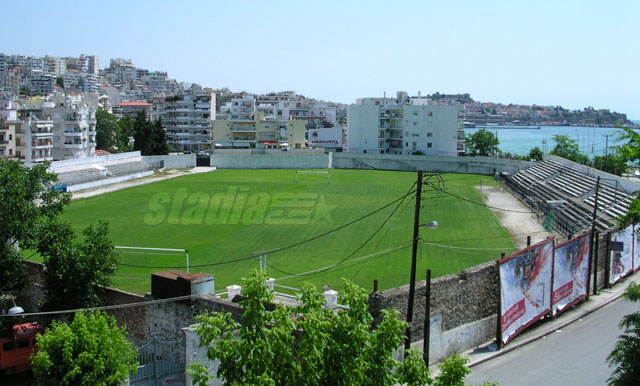
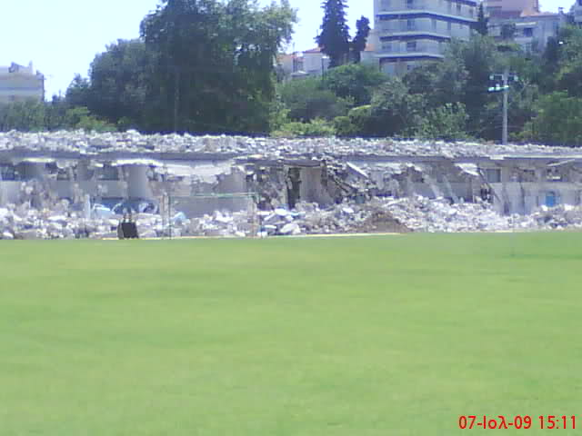
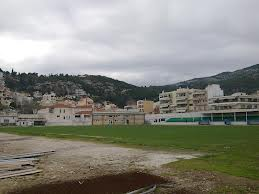

Για την ιστορία το δημοτικό στάδιο Καβάλας "Βερούλειο" κατασκευάστηκε το 1993 και πήρε το όνομά του προς τιμήν της πρωταθλήτριας του ακοντισμού Άννας Βερούλη η οποία κατέκτησε το χρυσό μετάλλιο στους Πανευρωπαϊκούς αγώνες στίβου του 1982 που διεξήχθησαν στην Αθήνα με επίδοση 70.02 μέτρα και το χάλκινο μετάλλιο στο Παγκόσμιο πρωτάθλημα στίβου του 1983 του Ελσίνκι με επίδοση 65.72 μέτρα. Το "Βερούλειο" στέγαζε 4 ομάδες (Φίλιπποι, ΑΕΚ, Βύρων και Ηρακλή) που το χρησιμοποιούσαν ως έδρα τους τόσο για αγώνες όσο και για προπονήσεις μέχρι να έρθει το 1965 η ένωση των ομάδων αυτών (πλην του Βύρωνα) σε έναν αθλητικό σύλλογο, το σημερινό Α.Ο.Καβάλα που έχει ως έδρα το δημ. στάδιο "Ανθή Καραγιάννη". Αργότερα βέβαια ΑΕΚ και Ηρακλής δημιουργήθηκαν πάλι και είχαν για έδρα τους το Βερούλειο όπως συμβαίνει μέχρι και σήμερα.

Ξεκίνησαν οι εργασίες κατεδάφισης της νότιας κερκίδας, αλλά και της αποπεράτωσης στο Βερούλειο Στάδιο στην πόλη της Καβάλας. Πρόκειται για εργασίες που είχαν προγραμματιστεί εδώ και καιρό. Όπως παρατηρεί ο αρμόδιος αντιδήμαρχος Καβάλας Νίκος Δημητριάδης «Η κερκίδα αυτή έχει χαρακτηριστεί επικίνδυνη εδώ και πολλά χρόνια και το κόστος ανακατασκευής της Κερκίδας ήταν περισσότερο από το κόστος της κατεδάφισης της. Για το λόγο αυτό η διοίκηση του Δήμου αποφάσισε να κατασκευάσει νέα αποδυτήρια και να στεγαστούν εκεί οι ομάδες και αναμένεται να είναι έτοιμα το Σεπτέμβριο. Εν τω μεταξύ σε μία εβδομάδα πιστεύω ότι θα έχει ολοκληρωθεί και η κατεδάφιση της κερκίδας. Στην προτελευταία τώρα συνεδρίαση του Δημοτικού Συμβουλίου Καβάλας αποφασίστηκε ένα ακόμη έργο για το Βερούλειο. Αυτή είναι η περίφραξη η οποία θα έχει ύψος 5 μέτρα έτσι ώστε να μην μπορεί να βγαίνει η μπάλα στο δρόμο αφού πρώτα προηγηθεί η κατασκευή ενός τοιχίου έτσι ώστε να ισορροπηθεί η υψομετρική διαφορά με το οδόστρωμα.
 